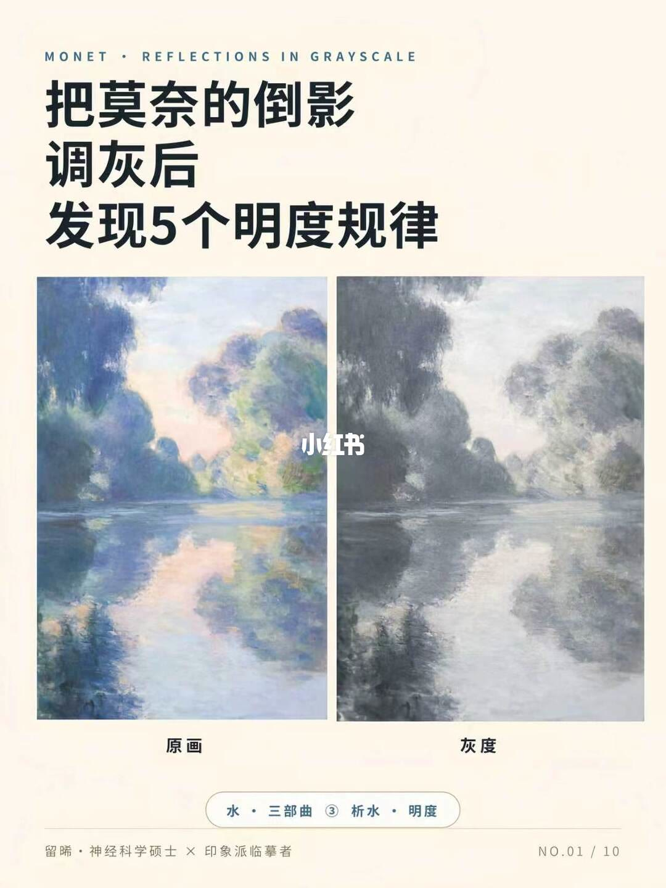
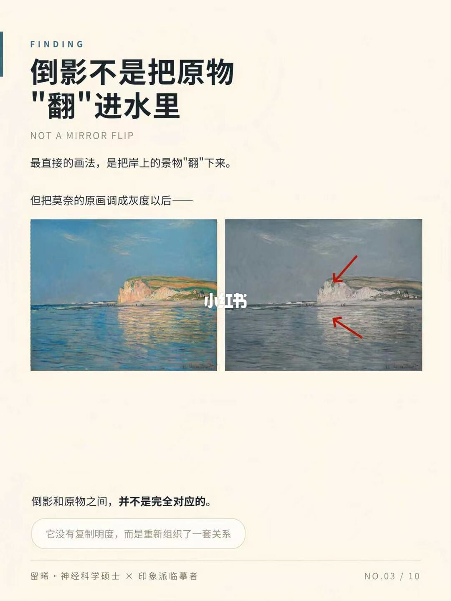
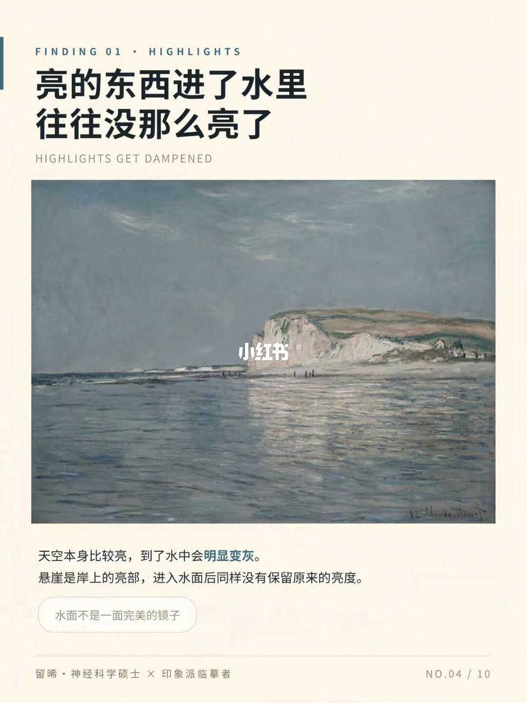
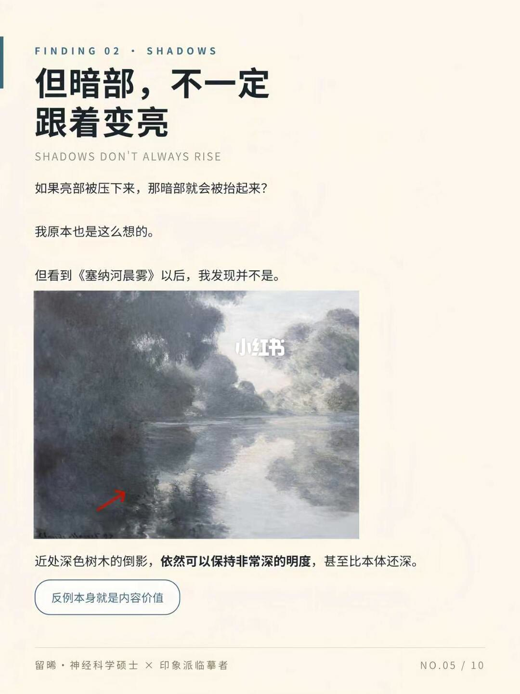
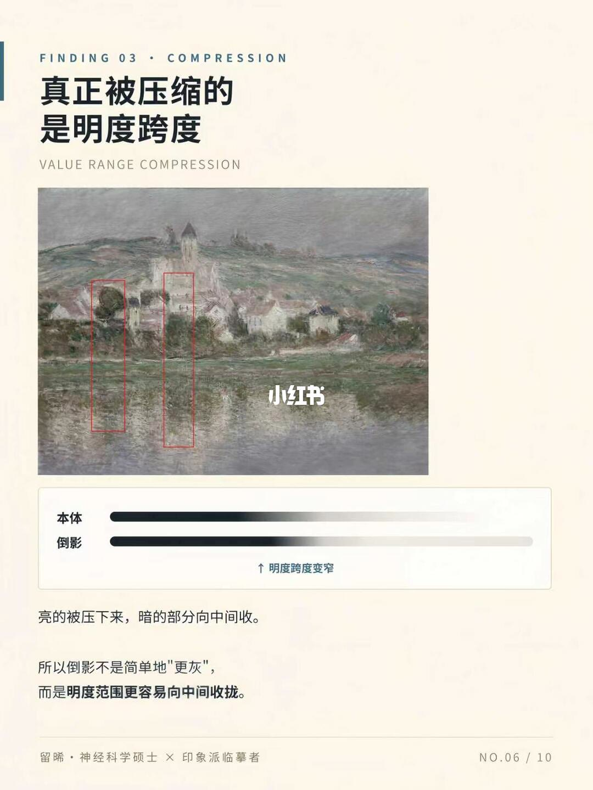
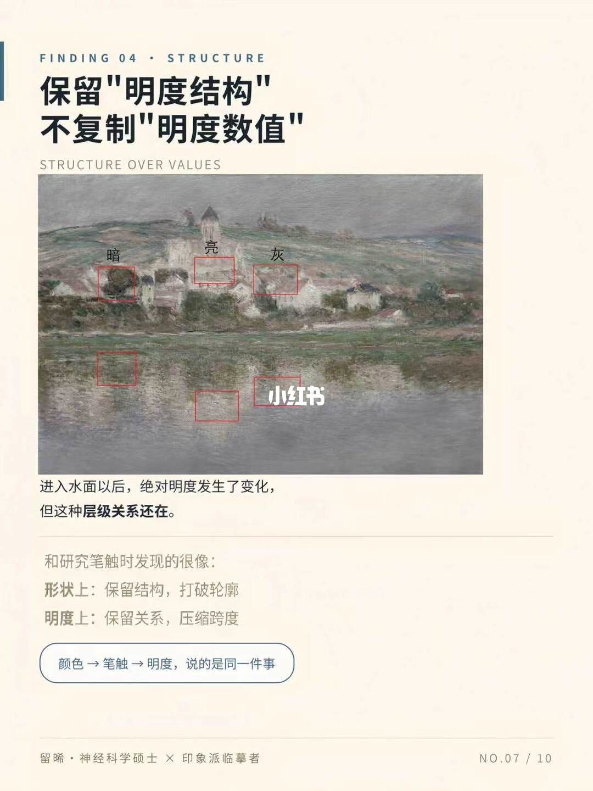
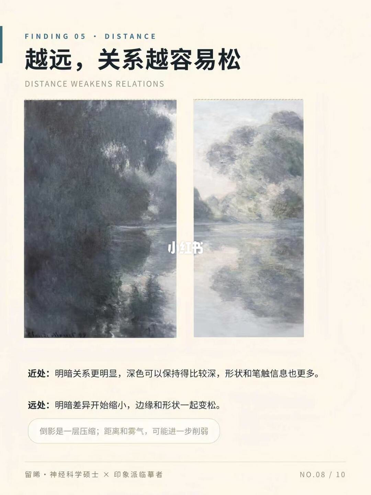
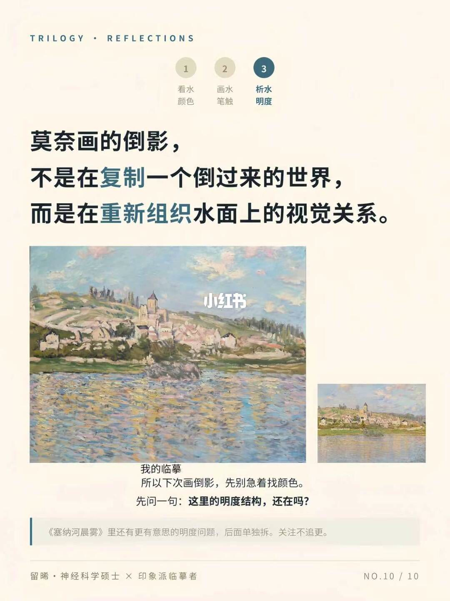

图文实录 · 小红书 · 留晞*
把莫奈的倒影调灰后，我发了5条明度规律
调成灰度之后，倒影留下的是明暗次序，不是岸上那套明度数字。亮的进了水通常没那么亮；暗的不必因此被抬高，近处的深色倒影还可以比本体更深；整段明度跨度向中间收，但暗、灰、亮谁比谁深还在；再远、再有雾，这层关系会继续变松。封面写「5个」，总结页写「5条」，图上编号是 FINDING 01 到 05，数量就是这五条。图上没有色号，也没有测出来的明度数值。
1/10
先把倒影调灰，问题才看得清
页眉是 MONET · REFLECTIONS IN GRAYSCALE。大标题拆成三行：把莫奈的倒影调灰后，发现 5 个明度规律。笔记标题用的是「我发了 5 条」，封面用的是「发现 5 个」，数量都是 5。中间同一幅河景并排，左下标「原画」，右下标「灰度」。这页没有写出画名。底部胶囊是「水 · 三部曲 ③ 析水 · 明度」。页脚署名「留晞 · 神经科学硕士 × 印象派临摹者」，页码 NO.01 / 10。

2/10
颜色对上了，还是差一口气
页眉 PERSONAL EXPERIENCE。标题「颜色都对上了，还是差一口气」，下面一行 MONET · VÉTHEUIL, PINK EFFECT。正文写：前两篇分别看了莫奈怎么用颜色、怎么用笔触画倒影；这次只看一件事——倒影里的明度，到底发生了什么变化？这一问被单独加重。画面是一幅灰度的河岸风景，右下角嵌着一小张彩色。图上没有标明这张小图是《Vétheuil, Pink Effect》的哪一个局部。底部胶囊：「差的这口气，多半在「明度」上」。页码 NO.02 / 10。
3/10
倒影不是把原物翻进水里
页眉只有 FINDING，还没有编号。标题「倒影不是把原物『翻』进水里」，英文 NOT A MIRROR FLIP。正文：最直接的画法，是把岸上的景物「翻」下来；但把莫奈的原画调成灰度以后——下面并排两张，左彩色、右灰度。灰度上有红色箭头，一支指向岸上的亮部，一支指向水面里对应的位置。图上没有画名。箭头下方写：倒影和原物之间，并不是完全对应的。胶囊：「它没有复制明度，而是重新组织了一套关系」。页码 NO.03 / 10。

4/10
亮的东西进了水里，往往没那么亮
页眉 FINDING 01 · HIGHLIGHTS。标题「亮的东西进了水里，往往没那么亮了」，英文 HIGHLIGHTS GET DAMPENED。画面是一幅有悬崖和水面的莫奈作品，图上没有写画名，水印压在画面中间。正文两句：天空本身比较亮，到了水中会明显变灰；悬崖是岸上的亮部，进入水面后同样没有保留原来的亮度。「明显变灰」被标出来。胶囊：「水面不是一面完美的镜子」。页码 NO.04 / 10。这里用的是「往往」「没有保留」，没有给出亮了多少、灰了多少。

5/10
暗部不一定跟着变亮
页眉 FINDING 02 · SHADOWS。标题「但暗部，不一定跟着变亮」，英文 SHADOWS DON'T ALWAYS RISE。作者先把推论写出来：如果亮部被压下来，那暗部就会被抬起来？下一句是「我原本也是这么想的。」然后改口：看到《塞纳河晨雾》以后，发现并不是。画面是雾气里的河岸，红色箭头指向近处水中一条很深的竖向倒影。图说：近处深色树木的倒影，依然可以保持非常深的明度，甚至比本体还深。胶囊：「反例本身就是内容价值」。页码 NO.05 / 10。

6/10
真正被压缩的是明度跨度
页眉 FINDING 03 · COMPRESSION。标题「真正被压缩的是明度跨度」，英文 VALUE RANGE COMPRESSION。画面是河岸和房子，左右各有一个瘦长红框，分别套住岸上景物和它下面的水面。图上另有两条明度条：上面标「本体」，跨度更宽；下面标「倒影」，两端都往里收。旁边写着「明度跨度变窄」。箭头符号在识别里不完整，方向无法逐字确认。正文：亮的被压下来，暗的部分向中间收。所以倒影不是简单地「更灰」，而是明度范围更容易向中间收拢。页码 NO.06 / 10。这一页的「暗的部分向中间收」是总趋势；上一页的深色倒影是它自己标出的反例，两页要一起读。

7/10
留下明度结构，不抄明度数值
页眉 FINDING 04 · STRUCTURE。标题「保留『明度结构』，不复制『明度数值』」，英文 STRUCTURE OVER VALUES。河岸画面上有红框，岸上标了「暗」「亮」「灰」，水面里对应位置也各有一框。左右谁在先，这页的文字没有再排一次序。图说：进入水面以后，绝对明度发生了变化，但这种层级关系还在。下面把前两篇接上来：和研究笔触时发现的很像。形状上，保留结构，打破轮廓。明度上，保留关系，压缩跨度。胶囊把三篇收成一句：「颜色、笔触、明度，说的是同一件事」。连接三者的符号无法逐字确认。页码 NO.07 / 10。

8/10
越远，关系越容易松
页眉 FINDING 05 · DISTANCE。标题「越远，关系越容易松」，英文 DISTANCE WEAKENS RELATIONS。中间两块竖向局部并排，都是树和倒影。左边更深、对比更开；右边更淡，边缘更糊。图上没有写哪一块是哪一幅画。正文分两行。近处：明暗关系更明显，深色可以保持得比较深，形状和笔触信息也更多。远处：明暗差异开始缩小，边缘和形状一起变松。胶囊：「倒影是一层压缩；距离和雾气，可能进一步削弱」。后半句停在「削弱」，削弱的对象要回到标题里的「关系」。页码 NO.08 / 10。

9/10
五条规律并排
页眉 5 RULES OF REFLECTION VALUE。标题「莫奈倒影的 5 条明度规律」，右上胶囊「总结」。五条都在，和封面的「5 个」数量相同，用词从「个」换成「条」。
① 亮部被压低。原物中的高明度，进入水面后通常下降。② 暗部不必完全抬高。关键深色倒影仍然可以保持足够深。③ 明度跨度整体收窄。亮不那么亮，暗也不一定原样复制。④ 明度关系仍然保留。保留结构关系，不复制绝对数值。⑤ 距离越远，关系越容易弱化。空间、空气与雾气会进一步让明暗变得整体。页码 NO.09 / 10。第 ② 条的「不必完全」和第 ③ 条的「不一定原样复制」，把第 5 页的反例留在总表里了。
10/10
下次先问明度结构还在不在
页眉 TRILOGY · REFLECTIONS。三个圆标：① 看水 · 颜色，② 画水 · 笔触，③ 析水 · 明度。第三步被标成当前这一篇。正文：莫奈画的倒影，不是在复制一个倒过来的世界，而是在重新组织水面上的视觉关系。「重新组织」和「视觉关系」在句中被标出。主图下方写「我的临摹」，是一座坡上的镇子和河。右侧另有一幅较小的同一类画面，图上没有文字说明它是原画还是另一张稿，无法确认。下面两句：所以下次画倒影，先别急着找颜色。先问一句：这里的明度结构，还在吗？底栏：《塞纳河晨雾》里还有更有意思的明度问题，后面单独拆。关注不追更。页码 NO.10 / 10。

收尾
结论：倒影保留明度结构，不复制明度数值。亮部通常被压低；暗部不必因此抬高，关键深色还可以保持得很深，甚至深过本体；整段跨度向中间收；暗、灰、亮的次序还在；越远、越有雾，这层关系越松。封面的「5 个」和总结页的「5 条」是同一组，编号 01 到 05。
支撑页：问题在 1/10、2/10。否定「翻进水里」在 3/10。亮部变灰在 4/10。暗部反例在 5/10。跨度收窄在 6/10。结构与数值分开在 7/10。近远在 8/10。五条总表在 9/10。临摹时先问结构还在不在，写在 10/10。
边界：图上没有色号，也没有测得的明度差。第 4、6、8、9 页用了「往往」「通常」「更容易」「可能」，不是每处倒影都一样。第 5 页的深色倒影限制了「暗部向中间收」，不能读成所有暗部都会变浅。《塞纳河晨雾》作者写明后面单独拆。第 6 页明度条旁的箭头符号无法逐字确认。第 10 页右侧小图没有标注身份。第 1、3、4、6、7、8 页的具体画名，除第 2 页点出 Vétheuil, Pink Effect、第 5 页和第 10 页点出《塞纳河晨雾》以外，图上没有写。